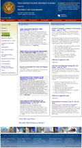
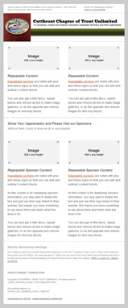

I redesigned and implemented a new website for the US District Court, District of Colorado as a User Support Specialist.
I created an editable MailChimp template for the Cutthroat Chapter of Trout Unlimited for their monthly newsletter.
About Me
I'm passionate about building solid websites using clean and well written code. I believe that in such an ever evolving industry it's essential to stay on top of new trends and to build sites using the latest techniques while maintaining a balance of accessibility and compatibility with all users.
I've worked with many clients from various industries in my career and subsequently gained valuable experience not just in web development but also photography, manufacturing, customer service, and space flight.